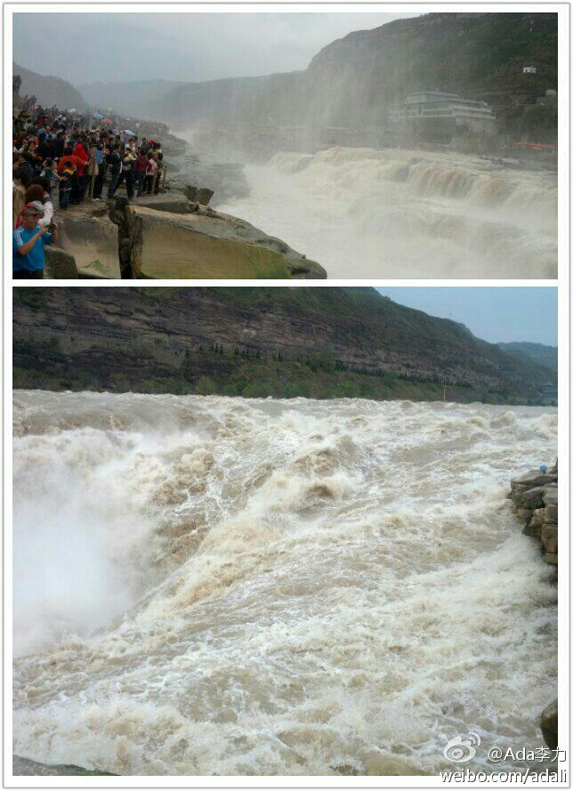

一整天颠簸，在壶口瀑布只呆了一个小时，站在瀑布边一会儿就会被水雾打湿头发和衣服，还是觉得值。从山西境内看瀑布景观最好，因而山西这边的景区维护得也不错。而河对岸的陕西省则沿河盖了几栋巨丑的楼，十分煞风景。 
#国庆长假# 如果没有这次自驾游，我想自己怎么也不会旅游跑到山西吕梁市来。沿途已经见识了巨型拉煤车。晚上十点半进入市区，看到更多的一辆辆运煤车在道路上排得像列车一样，望不到头。真是很难得见到的情形。 我在#天天渔港大酒店# 吕梁·天天渔港大酒店